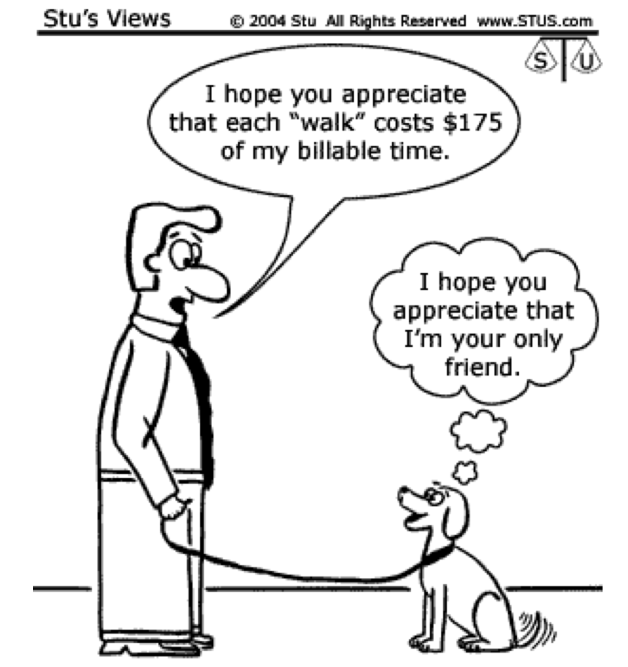

Scarcity is a relationship—not simply “having little”
Many possible uses
Things people want to do or have
>
Resources available
Time, money, labor, land, and capital
Scarcity exists when available resources are insufficient to satisfy every possible want or use.
A resource does not need to be rare to be scarce. It only needs competing uses.
Scarce resources
Scarcity appears at every level of economic life
24
Time
Study, work, socialize, or rest?
$
Money
Spend, save, or invest?
L
Labor
Which tasks should workers perform?
A
Land
Food, housing, energy, or conservation?
K
Capital
Which equipment or facilities?
H₂O
Natural resources
How should water and energy be allocated?
Student
One hour before an exam.
Farm
One acre with several possible crops.
Government
One budget with many public needs.
A common misconception
Scarcity is not the same as poverty
Myth
“Only people with very little money face scarcity.”
Reality
1
A millionaire still has only 24 hours in a day.
2
A wealthy university still cannot fund every project.
3
More resources expand choices; they do not make all choices possible.
Scarcity is about having to choose, not simply about being poor.
Do not confuse these
Scarcity versus shortage
Scarcity
Shortage
Resources cannot satisfy every possible use.
At the current price, buyers want more than sellers provide.
A permanent feature of economic life.
A condition in a particular market at a particular price.
Changing a price cannot eliminate the basic constraint.
A price change or new supply may eliminate it.
Example: only 24 hours in a day.
Example: a café runs out of oat milk at noon.
Something can reflect both: finite concert seats are scarce, and a sold-out show can have a shortage at the posted price.
Definitions adapted from OpenStax, Principles of Economics, Chapter 1.
Quick check
Scarcity, shortage, or both?
Scenario 1 of 4
Everyone has only 24 hours in a day.
Score: 0
Choose the best classification.
2 · Producing more together
Why don’t you produce your own breakfast?
Before drinking one cup of coffee, did you personally…
grow and harvest the beans?
process, export, and transport them?
roast and package them?
make the cup and prepare the drink?
You do not need to know how to do everything—because people specialize.
One simple purchase connects many specialized producers.
Two related ideas
Division of labor and specialization
Division of labor
A production process is divided into separate tasks performed by different workers.
Specialization
A worker, firm, or region concentrates on a narrower set of tasks or products.
1
Take order
2
Prepare drink
3
Assemble food
4
Check & serve
A café can assign each order to one generalist—or divide these tasks among specialists.
Prediction
How large can the productivity gain be?
Suppose one generalist can make 20 pins per day. Ten generalists would make 200. Adam Smith observed that ten specialized workers could make about 48,000.
10 generalists
● ● ● ● ● ● ● ● ● ●
200 pins
VS
10 specialists
① ② ③ ④ ⑤ ⑥ ⑦ ⑧ ⑨ ⑩
48,000 pins
Specialized output is approximately:
Predict first, then choose an answer.
Pin-factory example: Adam Smith, The Wealth of Nations, Book I, Chapter 1; figures as presented in OpenStax.
Productivity
Why specialization can increase output
1
Task matching
People can focus on tasks that fit their skills, talents, location, or equipment.
2
Learning
Repeating a task improves speed and quality—and can inspire better methods.
3
Scale
Larger production makes specialized tools, machines, and processes worthwhile.
Important: specialization is especially powerful when production is repeated at sufficient scale.
The other side of specialization
Higher productivity creates interdependence
Click a participant in the coffee supply chain.
When people produce fewer things themselves, they depend more on other specialists.
Interdependence: your ability to consume depends on the production and choices of other people.
Coordinating interdependence
Trade and markets connect specialists
↗
Trade
Specialized producers exchange what they produce for other goods and services they value.
⇄
◎
Market
An institution or arrangement that brings potential buyers and sellers together.
Markets coordinate exchange so that no individual needs to produce everything they consume.
One cause, two responses
Specialization does not eliminate scarcity
SCARCITY
Use resources more productively
→
Specialization creates interdependence
→
Trade and markets coordinate
Not every alternative is feasible
→
Decision-makers must choose
→
Every choice has an opportunity cost
Trade expands our possibilities. It does not give us unlimited time, income, land, labor, or other resources.
3 · The cost of choosing
Choosing one option means giving up others
YOUR CHOICE
Review ARE 201 notes
You use the only free hour available before the exam.
OPTIONS NOT CHOSEN
Work the $40 shift
Have dinner with a friend
Rest or sleep
Think before revealing: economics uses a more precise definition.
Opportunity cost
The next-best alternative is what matters
Opportunity cost is the value of the next-best alternative forgone when a choice is made.
1
Review ARE 201 notes
CHOSEN
2
Work a $40 shift
OPPORTUNITY COST
3
Have dinner with a friend
NOT NEXT-BEST
4
Rest or sleep
NOT NEXT-BEST
The ranking can differ across people, so opportunity cost can differ too.
Definition adapted from OpenStax, Principles of Economics, Chapter 2.
Opportunity cost of time
A “free” walk can still be costly

The owner’s opportunity cost
$175 of billable work forgone
The walk has no ticket price, but it uses time that could produce income.
The dog’s reminder
Benefits need not be monetary
Companionship and enjoyment belong on the benefit side of the decision.
Decision question
Is the walk worth what is given up?
Opportunity cost informs the choice; it does not make the choice by itself.
Keep the labels separate
Opportunity cost is part of total economic cost
Opportunity cost (OC)
What is the best option you give up?
Net benefit of the next-best alternative forgone
Look outside the chosen option and identify the best feasible alternative.
Total economic cost (TEC)
What must you give up altogether?
Relevant explicit cost of the chosen option + opportunity cost
Include only costs that the current choice can still avoid. Sunk costs are excluded.
Decision rule
Choose an option when its gross benefit is at least as large as its total economic cost.
Apply the distinction
College and a movie: separate the cost components
Going to college
Choose to attend college
Relevant explicit cost
Net tuition, required fees, and books
Opportunity cost
Net benefit of the best alternative—for example, earnings and experience from working
TEC = education expenses + OC
Seeing a movie
Choose to see the movie
Relevant explicit cost
The movie-ticket price
Opportunity cost
Net benefit of the highest-valued alternative use of the same time
TEC = ticket price + OC
Keep benefits separate: a possible increase in future earnings is a benefit of college—not a cost.
Common mistake #1
Do not add every rejected alternative
One choice
You choose the alternative with the greatest value to you.
One next-best
The opportunity cost is the value of the highest-ranked option you did not choose.
Not a bundle
You could not have done every rejected activity in the same scarce hour.
Opportunity cost ≠ the value of all alternatives forgone
Common mistake #2
A zero price does not mean a zero opportunity cost
NC State game ticket
Admission
FREE
Next-best alternative: work a shift that pays $60.
Ticket price
$0
≠
Opportunity cost
Value of the shift
Free activities still use scarce time. Here, the forgone earnings are part of what the student gives up.
Common mistake #3
The sticker price may not capture the full cost
Visible costs of college
What appears on a bill
$
Tuition and fees
$
Books and supplies
$
Additional living expenses
The next-best alternative
What the bill may omit
T
Time spent in class and studying
W
Earnings from working instead
O
Other opportunities made infeasible
Economic thinking asks: what is the most valuable feasible alternative this decision prevents?
College example adapted from OpenStax, Principles of Economics, Chapter 2.
Decision timing matters
Sunk cost versus opportunity cost
Sunk cost
Already incurred and cannot be recovered
Test: Is the cost the same no matter what I choose now?
Use: Ignore it in the current decision.
Opportunity cost
Created by the choice being made now
Test: What is the net benefit of my next-best alternative?
Use: Include it in the current decision.
Movie check
You paid $20 for a nonrefundable ticket. After 20 minutes, you dislike the movie. Stay or leave?
$20 ticket → sunk cost. It cannot be recovered either way.
OC of staying → net benefit of the best alternative use of the remaining time.
Before purchase: the ticket price was avoidable and relevant. After nonrefundable payment: it is sunk.
Practice
Apply opportunity and relevant costs
Question 1 of 6
Friday Review Session
Alex ranks the options: (1) attend review, (2) work a $40 shift, (3) have lunch with friends. Alex attends review. What is the opportunity cost?
Score: 0
Focus on the next-best feasible alternative and on costs that can still change.
Put the logic together
From scarcity to opportunity cost
1
Identify the scarce resources and the constraint.
2
List the feasible alternatives.
3
Evaluate and rank the alternatives by net benefit.
4
Choose the option with the highest net benefit.
5
The value of #2 becomes the opportunity cost.
Return to the opening choice
Step 1: choose what you would do.
Your opportunity cost depends on your own next-best alternative.
Rational choice
Choose the feasible option with the highest net benefit. Among complete, mutually exclusive alternatives, this also gives the lowest opportunity cost.
Exit ticket
Can you complete both steps?
Explain
Why does scarcity create opportunity cost?
Scarce resources cannot be used for every alternative, so choosing one use requires giving up the next-best use.
Apply
A field is used for strawberries. Its next-best use—vegetables—would earn $4,000. Opportunity cost?
$4,000 in expected returns from vegetables.
Scarcity forces choices. Opportunity cost is the value of the next-best choice we give up.
Core concepts and selected examples adapted from OpenStax, Principles of Economics, Chapters 1–2.